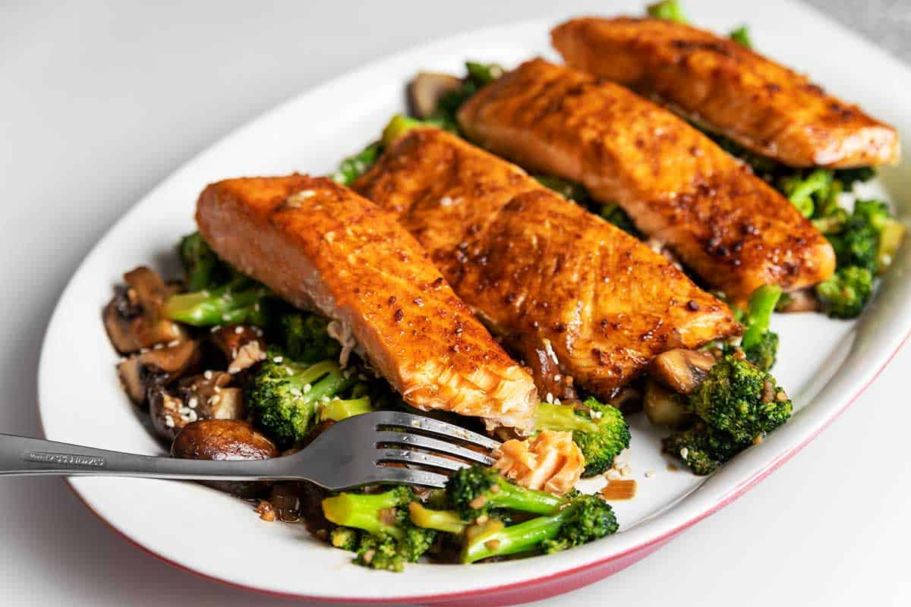

Keto Teriyaki Salmon

Description
Very delicious and flavor packed salmon recipe that is easy to make with an air fryer or oven. Definitely one of my go to meals for dinner. Easy to make under 30 min. Highly reccommend adding this one to the rotation!
Ingredients
- 4 4 ounce Salmon Portions
- ½ Cup Diced onion
- 4 Cups Broccoli florets
- 8 ounces Whole mushrooms, quartered
- ¼ Cup Soy Sauce
- 3 Tablespoons Swerve Brown Sugar
- 1 Clove Garlic, minced
- 1 teaspoon Grated ginger
Steps
- in a small bowl, combine the soy sauce, swerve, garlic and ginger. Use a basting brush to brush some of the marinade on the salmon portions.
- Place the salmon in the air fryer that has been lined with foil. Cook at 400F for 15 minutes or until desired internal temperature. 125F for medium rare
- In a alrge skillet over medium heat, add in the onion, broccoli, and mushrooms. Saute' for 5 minutes. Pour in the remaining teriyaki sauce and continue to cook, stirring occasionally, until the broccoli is fork tender. Serve alongside the salmon.